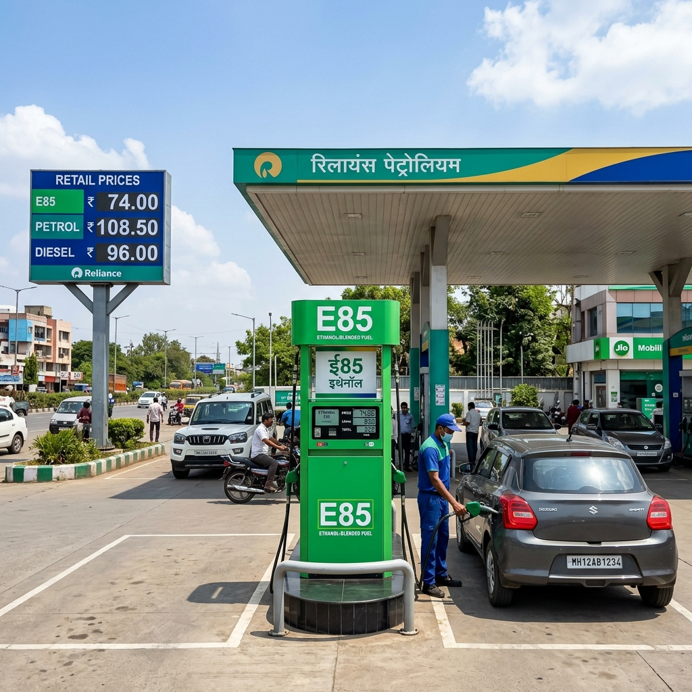

The Indian automotive landscape is undergoing a monumental shift. As the world grapples with climate change, volatile crude oil prices, and stringent emission norms, automakers and governments alike are aggressively exploring cleaner, more sustainable alternatives to traditional fossil fuels. While Electric Vehicles (EVs) have taken center stage in this green revolution, another formidable contender is rapidly gaining traction: Flex-Fuel, specifically the E85 ethanol blend. At the heart of this evolving narrative in India is Tata Motors, a homegrown behemoth that has consistently spearheaded automotive innovation. The industry is currently buzzing with intense speculation and anticipation surrounding a potential flex-fuel variant of their undisputed champion, the Tata Nexon.
This comprehensive article delves deep into the rumors, official updates, technical intricacies, and the broader implications of the much-anticipated Tata Nexon E85 version. We will explore what E85 means for the Indian consumer, the technical challenges involved in its implementation, and how it stacks up against the existing array of powertrain options.

The Paradigm Shift: Understanding E85 and Flex-Fuel Technology
Before diving into the specifics of the Tata Nexon E85, it is crucial to understand the fundamental technology behind it. "Flex-Fuel" or flexible fuel refers to a mixture of standard gasoline (petrol) and methanol or ethanol. The "E" stands for Ethanol, and the number following it represents the percentage of ethanol in the blend.
Currently, India is rapidly transitioning towards an E20 mandate, meaning the fuel dispensed at standard pumps contains 20% ethanol and 80% petrol. However, E85 represents a much more aggressive and impactful step, comprising up to 85% ethanol and only 15% petrol.
Why Ethanol?
Ethanol is a renewable biofuel primarily produced from the fermentation of sugars found in crops like sugarcane, corn, and agricultural waste. In an agrarian economy like India, the production of ethanol offers a dual advantage. Firstly, it provides an additional and lucrative revenue stream for farmers, thereby boosting the rural economy. Secondly, it drastically reduces the nation's reliance on imported crude oil, which is a major contributor to India's import bill and economic vulnerability.
Environmentally, ethanol burns significantly cleaner than pure gasoline. It has a higher octane rating, which can improve engine performance, and it produces fewer greenhouse gas emissions, particulate matter, and unburned hydrocarbons.
The E85 Advantage
An E85-compatible vehicle, known as a Flexible Fuel Vehicle (FFV), is engineered to run on any blend of ethanol and petrol, from pure petrol up to 85% ethanol. This flexibility is the key. Drivers are not stranded if E85 is unavailable; they can simply fill up with standard petrol or E20. The primary advantage of E85 lies in its potential to dramatically slash carbon emissions and offer a cheaper alternative at the pump, provided the fuel pricing policies are structured favorably.
The Indian Context: The Government's Push for Ethanol
The Government of India, spearheaded by the Ministry of Road Transport and Highways, has been a vocal and aggressive proponent of ethanol blending. The initial target of achieving 20% ethanol blending (E20) was advanced from 2030 to 2025, underscoring the urgency and commitment to this green initiative.
Furthermore, government officials have consistently urged automobile manufacturers to develop and launch flex-fuel vehicles capable of running on E85 or even 100% ethanol. The rationale is clear: large-scale adoption of FFVs will absorb the surplus sugar production, create a robust biofuel economy, and significantly curtail vehicular pollution in increasingly congested Indian cities. It is within this fertile, policy-driven environment that the rumors of the Tata Nexon E85 have taken root.
Tata Motors: A Pioneer in Alternative Powertrains
Tata Motors has established itself as an undisputed leader in the Indian EV space with the phenomenal success of the Nexon EV, Tiago EV, and Punch EV. Simultaneously, they have democratized CNG technology with their innovative twin-cylinder iCNG technology, ensuring practicality without compromising boot space.
Given their proactive approach to alternative fuels, it is entirely logical, if not inevitable, that Tata Motors is actively exploring flex-fuel technology. The company's 'multi-powertrain' strategy ensures that they are not putting all their eggs in one basket. While EVs are the long-term goal, the transition period requires practical, immediately deployable solutions, and E85 fits perfectly into this transitional matrix.
Why the Tata Nexon for E85?
The Tata Nexon is not just a car; it's a phenomenon. It consistently ranks among the highest-selling SUVs in India. Its bold design, robust build quality (evidenced by its 5-star Global NCAP rating), and feature-rich interior have struck a profound chord with Indian buyers.
Choosing the Nexon as the launchpad for E85 technology makes perfect strategic sense for Tata Motors for several reasons:
1. Volume and Visibility: Introducing a new technology in a high-volume product ensures maximum market penetration and visibility. If the Nexon E85 succeeds, it sets a powerful precedent for the rest of the lineup. 2. Platform Adaptability: The Nexon's versatile X1 platform already accommodates petrol, diesel, and electric powertrains. Adapting it for a flex-fuel engine, while challenging, is technically feasible within the existing architecture. 3. Target Audience: The Nexon buyer is typically a modern, environmentally conscious consumer who is open to embracing new technologies, making them the ideal demographic for a flex-fuel vehicle.
Tata Nexon E85: The Rumor Mill
The automotive rumor mill has been working overtime regarding the Nexon E85. Several distinct rumors and speculations have fueled the excitement:
* The Auto Expo Speculation: While Tata Motors has showcased various concepts at recent Auto Expos, the conspicuous absence of a production-ready flex-fuel vehicle led to intense speculation that they were secretly developing an E85 powertrain for their flagship compact SUV, preferring to unveil it closer to a market launch. * Test Mules: Reports of heavily camouflaged Tata Nexon test mules doing the rounds near Tata's engineering facilities in Pune have frequently been attributed to E85 testing. Observers have noted specialized exhaust emission testing equipment hooked up to these vehicles, strongly suggesting powertrain calibration for alternative fuels. * Engine Downsizing and Turbocharging: Rumors suggest that Tata might utilize a modified version of its existing 1.2-liter Revotron turbo-petrol engine. The inherent characteristics of ethanol, specifically its high octane rating, make it an excellent fuel for turbocharged engines, potentially allowing for higher compression ratios and more power without the risk of engine knock.
Official Updates: What Has Tata Motors Actually Said?
While rumors are abundant, official confirmations are more guarded. Tata Motors has maintained a strategic silence regarding a specific launch date for the Nexon E85, but their leadership has made several pertinent statements that confirm their active involvement in flex-fuel development.
1. Commitment to Government Initiatives: Tata Motors executives have publicly stated their commitment to aligning with the government's ethanol blending roadmap. They have confirmed that all their current petrol engines are E20 compliant. 2. R&D on Flex-Fuel: Official statements have acknowledged that Research and Development (R&D) on higher ethanol blends (E85 and E100) is well underway. The company is rigorously testing the long-term effects of highly corrosive ethanol on engine components. 3. The Prototype Phase: While a Nexon E85 hasn't been officially unveiled, it is an open secret within the industry that Tata Motors, like its competitors (e.g., Maruti Suzuki's WagonR Flex Fuel prototype), has working prototypes undergoing extensive validation testing.
The consensus among industry analysts is that Tata Motors is biding its time, waiting for the ethanol dispensing infrastructure to mature before launching a commercial product. Launching an E85 vehicle without a network of E85 pumps would be counterproductive and frustrate consumers.
The Technical Challenge: Engineering the Nexon E85
Converting a standard petrol engine to run on E85 is not simply a matter of pouring a different fuel into the tank. Ethanol has vastly different chemical and physical properties compared to petrol, necessitating significant engineering modifications. If Tata is to launch the Nexon E85, they must address several critical technical hurdles:
1. Combating Corrosion
Ethanol is highly hygroscopic (it absorbs water) and is corrosive to many common metals, plastics, and rubber compounds used in standard fuel systems. * The Solution: The Nexon E85 will require a completely upgraded fuel system. This includes stainless steel fuel lines, specialized polymer fuel tanks, and ethanol-resistant rubber seals and gaskets to prevent degradation and leaks over the vehicle's lifespan.2. Fuel Delivery and Injectors
Ethanol has a lower energy density than petrol. This means you need to burn a larger volume of ethanol to generate the same amount of energy. * The Solution: To maintain performance, the engine needs to inject more fuel. The Nexon E85 will require higher-capacity fuel injectors and a more robust fuel pump capable of handling the increased flow rates without failing.3. Engine Control Unit (ECU) Recalibration
The engine needs to know what fuel it is burning to adjust the air-fuel mixture and ignition timing accordingly. * The Solution: The Nexon E85 will be equipped with a sophisticated flex-fuel sensor in the fuel line. This sensor detects the exact percentage of ethanol in real-time and sends this data to the ECU. The ECU will then possess specialized mapping to dynamically adjust the fuel injection pulse width and advance the ignition timing to take advantage of ethanol's higher octane, ensuring smooth operation whether the tank is full of pure petrol, E20, or E85.4. Cold Start Issues
Ethanol does not vaporize as readily as petrol at low temperatures, making cold starts difficult, especially in winter. * The Solution: Engineers must implement specific cold-start strategies in the ECU software. This often involves injecting a richer mixture or utilizing specialized heating elements in the intake manifold to aid vaporization during startup.Expected Performance and Efficiency: The Trade-off
The adoption of E85 in the Tata Nexon will bring a unique set of performance and efficiency characteristics that consumers need to understand.
Performance Gains
Ethanol's high octane rating (often over 100) is a major advantage for the Nexon's turbocharged 1.2L engine. Higher octane prevents pre-ignition (engine knock), allowing the engine management system to advance the ignition timing and run higher boost pressures. * The Result: Drivers might actually experience a slight bump in horsepower and torque when running on E85 compared to standard petrol. The engine could feel more responsive and punchier.Fuel Efficiency (Mileage) Drop
This is the Achilles' heel of E85. Because ethanol has about 30% less energy per unit volume than petrol, fuel economy (kmpl) will inevitably decrease. * The Result: If a standard petrol Nexon delivers 15 kmpl, running the same car on E85 might yield only 10-11 kmpl.The Economic Equation
The viability of the Nexon E85 hinges entirely on the pricing of E85 fuel. For the consumer to benefit, the price of E85 per liter must be significantly lower than standard petrol to offset the drop in fuel efficiency. If E85 is priced correctly (subsidized or taxed lower), the overall running cost per kilometer could be equivalent to or slightly lower than petrol, with the added benefit of reduced emissions.The Environmental Imperative
The primary driver behind the push for the Nexon E85 is environmental sustainability. * Reduced Tailpipe Emissions: E85 burns substantially cleaner. Studies indicate that E85 can reduce greenhouse gas emissions by up to 70% compared to standard gasoline, depending on the source of the ethanol. It also significantly lowers emissions of carbon monoxide and particulate matter. * Life Cycle Analysis: The environmental benefits extend beyond the tailpipe. The crops grown to produce ethanol absorb carbon dioxide from the atmosphere during their growth cycle, creating a partially closed carbon loop.
Infrastructure: The Elephant in the Room
The most significant barrier to the immediate launch of the Tata Nexon E85 is not technological, but infrastructural. * The Chicken-and-Egg Problem: Automakers hesitate to launch E85 vehicles because there are virtually no E85 dispensing stations in India. Conversely, fuel retailers hesitate to invest in E85 infrastructure because there are no E85 vehicles on the road. * Government Intervention Required: To break this deadlock, massive government intervention is necessary. This involves mandating oil marketing companies (OMCs) to set up E85 pumps at a certain percentage of their existing fuel stations and providing subsidies or tax breaks to incentivize the creation of this infrastructure.
Until a robust network of E85 pumps is established, a flex-fuel vehicle remains impractical for the average consumer, restricting its use to niche applications or specific regions with better ethanol supply chains.
The Competitive Landscape
Tata Motors is not operating in a vacuum. Other major players in the Indian market are also aggressively pursuing flex-fuel technology:
* Maruti Suzuki: The market leader has already showcased a prototype of the WagonR Flex Fuel, capable of running on blends between E20 and E85. Maruti has expressed its intention to launch a mass-market flex-fuel vehicle in the near future. * Toyota: Toyota Kirloskar Motor has unveiled a flex-fuel prototype of the Innova Hycross. Toyota, with its global experience in flex-fuel technology (particularly in Brazil), is well-positioned to be a strong contender in this space.
The impending launch of the Nexon E85 will likely trigger a fierce competitive battle in the flex-fuel segment, driving innovation and ultimately benefiting the consumer.
Government Policies: The Catalyst for E85
The success of the Tata Nexon E85 is intrinsically linked to government policy. To make FFVs attractive, the government needs to implement several measures:
1. Favorable Taxation on Fuel: E85 must be taxed at a significantly lower rate than standard petrol to compensate for its lower energy density and ensure a lower running cost per kilometer. 2. GST Benefits on Vehicles: Currently, EVs enjoy a heavily subsidized GST rate of 5%. To encourage the adoption of flex-fuel vehicles, the government should consider offering similar tax incentives, reducing the upfront acquisition cost of the Nexon E85. 3. PLI Schemes: The Production Linked Incentive (PLI) scheme could be tailored to explicitly reward manufacturers for producing flex-fuel components locally, thereby reducing costs and fostering a domestic supply chain.
Pros and Cons of the Anticipated Tata Nexon E85
To summarize the potential impact of this vehicle, let's look at the anticipated pros and cons:
Pros:
* Significant Environmental Benefits: Substantial reduction in carbon footprint and localized air pollution. * Energy Independence: Contributes to reducing India's reliance on imported crude oil. * Potential Performance Boost: Higher octane ethanol can unlock better performance from the turbocharged engine. * Flexibility: The ability to run on standard petrol when E85 is unavailable eliminates range anxiety. * Support for Agrarian Economy: Boosts income for farmers by increasing demand for ethanol-producing crops.Cons:
* Lower Fuel Efficiency: Noticeable drop in mileage (kmpl) compared to pure petrol. * Infrastructure Dependency: Highly reliant on the establishment of a widespread E85 dispensing network, which currently does not exist. * Potential Initial Cost Premium: The specialized components required for a flex-fuel engine might result in a slightly higher initial purchase price compared to the standard petrol variant. * Fuel Pricing Uncertainty: The economic viability depends entirely on government taxation policies keeping E85 prices low.Conclusion: The Road Ahead for the Nexon E85
The Tata Nexon E85 represents a fascinating and highly anticipated intersection of automotive engineering, environmental responsibility, and national economic strategy. While official launch dates remain shrouded in corporate secrecy, the rumors and evident R&D efforts point towards a future where flex-fuel plays a crucial role in Tata Motors' portfolio.
However, the launch of the Nexon E85 is not merely a product launch; it is an ecosystem play. It requires a synchronized effort between automakers, government policymakers, and fuel retailers. Tata Motors possesses the engineering capability to build a robust and reliable Nexon E85. The real question is not if* they can build it, but *when the Indian infrastructure will be ready to support it.
Until the E85 pumps are in place and the pricing economics make sense for the average Indian buyer, the Tata Nexon E85 will remain a tantalizing prospect on the horizon—a powerful symbol of India's green mobility ambitions waiting for the green light.
---
Frequently Asked Questions (FAQs)
1. What is E85 fuel? E85 is a blend of 85% ethanol and 15% gasoline (petrol). It is a renewable alternative fuel designed to reduce greenhouse gas emissions and reliance on fossil fuels.
2. Can I use standard petrol in an E85 Tata Nexon? Yes. Flex-fuel vehicles are designed to run on any blend of ethanol and petrol, from 0% ethanol (pure petrol) up to 85% ethanol.
3. Will the Nexon E85 give better mileage than the petrol version? No. Ethanol has lower energy density than petrol. You will likely experience a decrease in fuel efficiency (kmpl) when running on E85. However, this is intended to be offset by a lower per-liter cost of E85 fuel.
4. When will the Tata Nexon E85 be launched in India? Tata Motors has not officially announced a launch date. The launch is highly dependent on the widespread availability of E85 fuel dispensing infrastructure across the country.
5. Are there any E85 pumps in India right now? Currently, the availability of E85 is practically non-existent for retail consumers in India. The government is focusing on rolling out E20 nationwide before establishing E85 infrastructure.
6. Will the E85 version cost more than the standard petrol Nexon? It is possible. The specialized, corrosion-resistant components and advanced sensors required for a flex-fuel engine may result in a slight premium over the standard petrol model, unless offset by government subsidies.